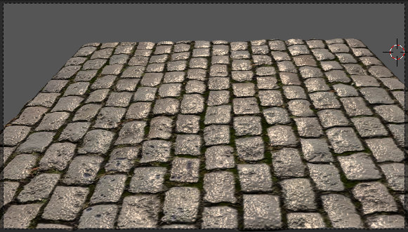
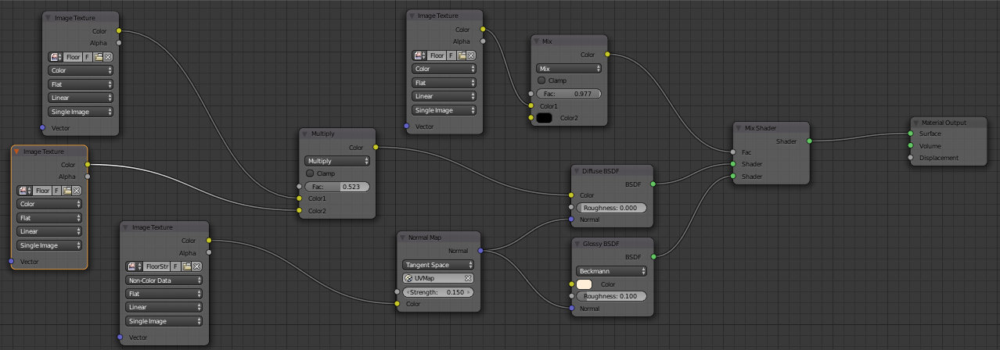
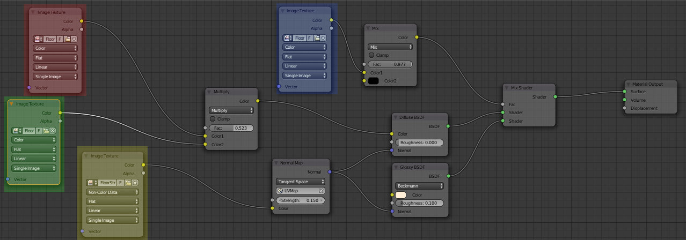
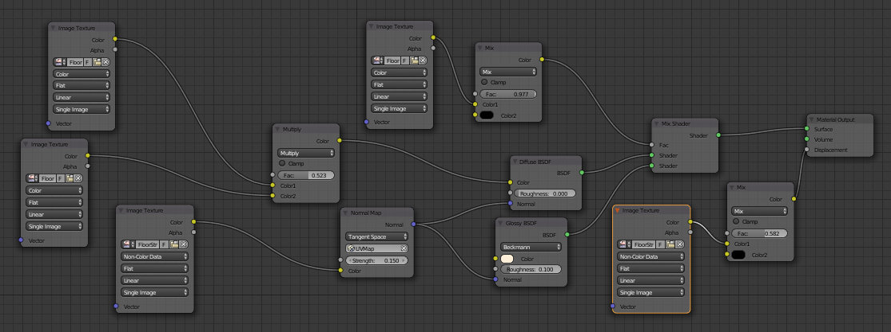
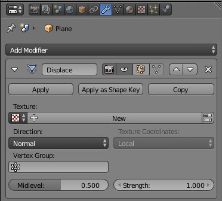
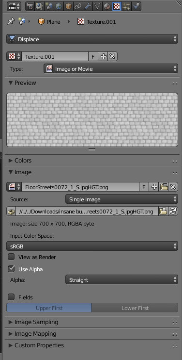
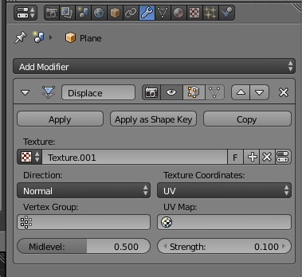

InsaneBump + Cycles para criar texturas mais realistas
Geralmente, a criação de texturas realistas implica a utilização de vários mapas. Utilizar uma imagem apenas (geralmente o Color/Diffuse map) é similar a imprimir a imagem e colar numa parede lisa. A configuração mais comum implica utilizar uma combinação de Diffuse map + Normal map + Specularity map + Occlusion map + Displacement map.
Nem sempre é fácil criar todos estes maps mas, felizmente, existem aplicações que auxiliam nesta tarefa. O InsaneBump é uma aplicação de Software Livre que permite gerar estes maps a partir de uma qualquer imagem. Existem outras aplicações mas o procedimento é quase sempre similar: a partir de um diffuse/color map (imagem que se pretende visualizar no objeto), a aplicação gera os restantes maps respeitando os parâmetros inseridos pelo utilizador.
InsaneBump para criar os diferentes mapas
O InsaneBump é um Software Livre que permite criar diferentes mapas a partir de uma imagem. Neste momento, existem duas versões úteis da aplicação:
Importa referir que a versão InsaneBump 2.* (standalone) é a mais recente mas ainda está em desenvolvimento, sendo expectável alguma evolução e novas funcionalidades no futuro.
InsaneBump 2.* (standalone)
O procedimento de utilização é simples. Depois de iniciar a aplicação, abra a imagem a partir da qual pretende gerar os diferentes mapas (Open New Texture). A interface do permite configurar diferentes parâmetros para melhorar o resultado final (barra lateral, lado esquerdo) e pode visualizar o impacto das suas configurações em tempo real (barra lateral, lado direito).
Quando estiver satisfeito, clique em Save Texture para gerar os diferentes mapas e armazenar os mesmos na mesma pasta onde se encontra a imagem original. Os diferentes mapas gerados são identificados com os respetivos sufixos:
- NR = normal map,
- SPEC = specular map
- HGT = height map (ou displacement map)
- Também são gerados falsos AO maps, gravados enquanto Alfa do Normal map.
InsaneBump 1.* (Gimp plugin)
O procedimento de utilização é simples. Depois de iniciar o GIMP, abra a imagem a partir da qual pretende gerar os diferentes mapas. A interface do plugin permite configurar diferentes parâmetros para melhorar o resultado final.
Depois de clicar em Execute, o plugin irá gerar os diferentes mapas e armazenar os mesmos na mesma pasta onde se encontra a imagem original. Os diferentes mapas gerados são identificados com os respetivos sufixos:
- _n = normal map,
- _s = specular map
- _d = diffusion map (apenas cor)
- _a = ambient occlusion map
- _h = height map (ou displacement map)
Do InsaneBump ao Cycles
No exercício que se segue, foi utilizada uma textura do site CGTextures.com.
Para gerar os diferentes mapas, foi utilizado o InsaneBump 1.* (Gimp plugin) com as configurações predefinidas.
Comparar resultados de diferentes possibilidades
As imagens abaixo apresentam o impacto da utilização de diferentes mapas, foram criadas com as mesmas condições de iluminação.
Na primeira fila, a imagem da esquerda (imagem 1) apresenta uma textura de imagem (Diffuse/color map) simplesmente aplicada a um plano. A imagem da direita (imagem 2) apresenta a mesma textura mas acompanhada de um Specular map, Normal map e Ambient Occlusion map. Em ambos os casos, o plano só tem 4 vértices.
Na segunda fila, a imagem da esquerda (imagem 3) apresenta todos os maps anteriores mais a utilização de um Displacement map através do modifier Displacement. Para o modifier funcionar, foi necessário subdividir o plano criando 1764 vértices (40 cuts).
A imagem da direita (imagem 4) utiliza o Height/Displacement map no material, não foi utilizado qualquer modifier. Plano tem 4 vértices.
A última imagem (imagem 5) combina todos os maps e o modifier Displacement..
Configuração no Cycles
O processo de configuração é simples. Em primeiro lugar, inserimos um plano e foi aplicada a imagem de textura original com UV map (fizemos Unwrap). O resultado é a imagem 1.
De seguida, configuramos o material aplicado ao plano de acordo com a imagem abaixo.

- LEGENDA
- Utilizamos um Mix Shader para combinar um shader Diffuse e um shader Glossy.
- AMARELO = Normal texture map (imagem com sufixo _n) liga a nó Normal Map que, por sua vez, conecta ao Normal dos shaders Diffuse e Glossy. Importa referir que, para obter resultados mais corretos, deverá escolher a opção Non-Color Data no nó de imagem com o Normal texture map. O Stregth no nó Normal Map controla a intensidade do efeito.
- AZUL = Specular texture map (imagem com sufixo _s) liga a um nó MixRGB (Color) que, por sua vez, conecta ao Fac do Mix Shader. Esta imagem controla a mistura entre Diffuse e Glossy. Ou seja, controla onde o plano tem mais brilhos. A utilização do MixRGB (Color) permite mais controle sobre a intensidade dos brilhos. No shader Glossy podemos definir a cor dos brilhos e o Roughness determina a (im)perfeição do brilho/reflexo (i.e um espelho tem Rougness 0.0).
- VERMELHO = é a imagem original que estamos a utilizar como Difuse/color map.
- VERDE = Ambient Occlusion texture map (imagem com sufixo _a). Esta imagem é combinada com a imagem original através de um nó MixRGB (Color) mas em modo Multiply.
O resultado é a imagem 2.
Depois, inserimos o Height texture map (imagem com sufixo _h) conectado ao Displacement do Material Output. Foi inserido um nó MixRGB (Color) para controlar melhor a intensidade do efeito, solução similar à utilizada para o Specular texture map.
O resultado é a imagem 4.
Até aqui, o plano tem 4 vértices e a sua geometria permanece inalterada. Todas as alterações são apenas resultado da utilização de diferentes texture maps. No entanto, para obter o resultado da imagem 5 temos de alterar a geometria. Este último passo não é obrigatório, depende do grau de realismo desejado.
O plano foi subdividido com 40 Cuts (ver à esquerda, barra de ferramentas).

Foi adicionado um modifier do tipo Displace ao plano.
No painel de texturas, escolhemos o tipo Displace (só fica disponível após adicionar o modifier Dsiplace) e escolhemos Height texture map (imagem com sufixo _h).
De volta ao modifier Displace, escolhemos a textura entretanto criada no passo anterior e manipulamos a intensidade do efeito através do painel Strength. Para o Displace surgir alinhado com as restantes testuras, escolhemos UV como Texture Coordinate.
NOTAS FINAIS 1: se quiser mais detalhe no Displace, adicione um Subdivision Surface. No entanto, na lista de modifiers assegure-se que o Subdivision Surface está em cima, antes do modifier Displace.
NOTAS FINAIS 2: A utilização do modifier Displace + Height texture map é opcional. Nem sempre é necessária ou desejável.